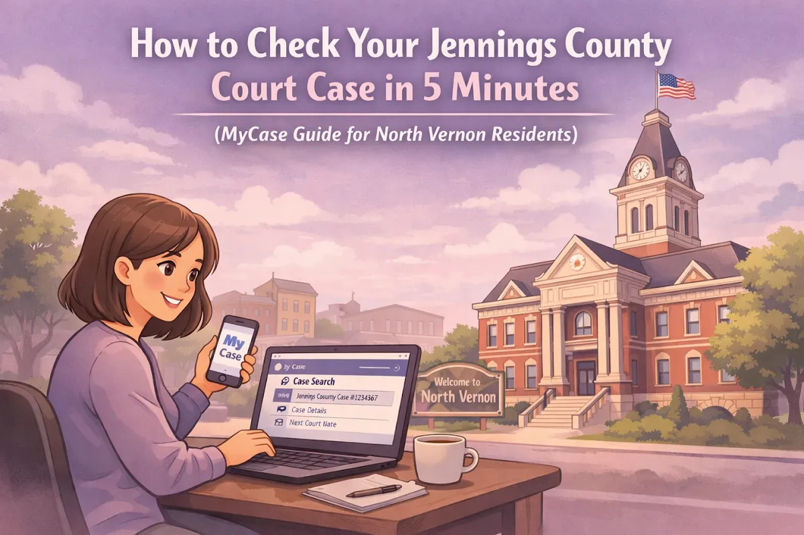
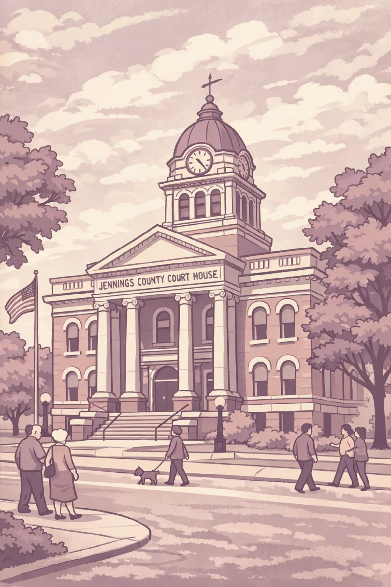

How to Check Your Jennings County Court Case in 5 Minutes (MyCase Guide for North Vernon Residents)

If you've got a court case in Jennings County, you probably have questions. When's my next court date? Did my lawyer file that motion yet? What did the other side say in their response?
The good news? You don't need to drive to the courthouse on Pike Street every time you want an update. Indiana has a free online tool called MyCase that lets you check your case from your kitchen table, your phone at the gas station, or anywhere you've got internet.
Let me walk you through exactly how to use it, and what you need to know before you start clicking around.
Why You Should Keep Tabs on Your Case
Look, I get it. Court cases are stressful. Sometimes you just want to forget about it until the next hearing. But checking MyCase regularly is one of the smartest things you can do, whether you're dealing with a divorce, a criminal charge, a small claims dispute, or anything else going through the Jennings County courts.
Here's why it matters:
You'll never miss a court date. The last thing you want is a bench warrant because you didn't realize your hearing got moved up. MyCase shows your upcoming events and any changes.
You can stay informed. If the other side files something, you'll know. If there's a new order from the judge, you'll see it. No surprises.
You can keep your lawyer in the loop. If you notice something new on MyCase, you can reach out to your attorney right away. It helps us help you better.
It's free and easy. You don't need a law degree or a special account. Just a few minutes and an internet connection.
The Step-by-Step Guide to Using MyCase
Alright, let's get into it. Here's exactly how to check your Jennings County court case online.
Step 1: Go to the MyCase Website. Open your browser and type in mycase.in.gov or just search "Indiana MyCase" on Google. You'll land on the Indiana MyCase portal homepage. It's a state website, so it's safe and official.
Step 2: Choose Your Search Method. MyCase gives you three ways to find your case:
Option 1: Search by Case Number. This is the fastest method if you have your case number handy. It's usually on any paperwork you got from the court: looks something like "29C01-2502-DR-000123" for a Jennings County case. Just type it in the search box and hit enter.
Option 2: Search by Name. Don't have your case number? No problem. You can search by your name or the other party's name. Just type in the last name, first name, or both. If you've got a common name like "Smith," you might get a bunch of results: just look for the case that matches your situation and the filing date.
Option 3: Search by Attorney. If you've got a lawyer representing you, you can search by their name or bar number. This will pull up all their cases, and you can find yours in the list.
Step 3: Pick Your Court. After you search, you might see cases from different counties or courts. Make sure you're looking at the right one. You can limit the Court to just those in Jennings County. For Jennings County cases, you'll see either "Jennings Superior Court" or "Jennings Circuit Court" depending on where your case was filed. Both courts are located right here in Vernon at the courthouse on Pike Street: Superior Court is on the first floor, Circuit Court is upstairs.
Step 4: View Your Case Details. Once you click on your case, you'll see a summary page with all kinds of information: Case Information (the case number, filing date, case type, and current status), Parties (who's involved in the case), Events (your past and upcoming court dates, hearings, and deadlines), Docket Entries (a chronological list of everything that's been filed or happened in your case), and Documents (copies of filings, motions, orders, and other court documents).
Step 5: Download Documents If You Need Them. MyCase lets you download most documents as PDFs. Just click on the document name in the docket entries section, and it should open in a new window or download to your device. Keep in mind that some documents: like sealed records, mental health information, or certain juvenile records: won't be available online for privacy reasons.
What You Can (and Can't) See on MyCase
MyCase is a great tool, but it's not perfect. Here's what you need to know about what's available and what's not.
What's Usually Available: Case numbers and filing dates, names of parties and attorneys, court dates and hearing schedules, docket entries (the list of filings), most court orders and judgments, motions filed by either side, and notices from the court.
What You Won't Find: Sealed or confidential documents, mental health or medical records, some juvenile case information, exhibits or evidence (usually), the full context behind legal filings, and legal advice about what it all means.
That last point is important. You might see a motion on MyCase and think "What does this mean for me?" or "Do I need to respond to this?" The documents themselves are there, but understanding them is a whole different story.
When MyCase Isn't Enough (And When to Call a Lawyer)
Here's the thing about MyCase: it shows you what is happening in your case, but it doesn't tell you what to do about it.
Let's say you log in and see that the other side filed a motion for summary judgment. Or you notice a hearing scheduled for next week that you didn't know about. Or there's an order from the judge that you don't quite understand.
That's when you need to pick up the phone and talk to an attorney.
As a Jennings County attorney who practices right here, I see this all the time. Someone checks MyCase, sees something that worries them, and then sits on it because they're not sure what it means or what to do next. Don't do that.
If you see something on MyCase that confuses you, concerns you, or seems urgent, reach out. I'm happy to look at your case, explain what's going on, and give you options. That's what I'm here for.

Other Ways to Get Information About Your Jennings County Case
MyCase is convenient, but it's not the only way to stay informed. Here are a few other resources:
Visit the Jennings County Clerk's Office. If you need certified copies of documents, want to ask questions in person, or can't find what you're looking for online, you can head to the Clerk's Office at 24 North Pike Street in Vernon. It's right at the courthouse: same building where both the Superior and Circuit Courts are located.
Call the Clerk's Office. Sometimes a quick phone call can answer your question faster than navigating the website. The staff at the Clerk's Office can tell you about upcoming court dates, confirm filings, and point you in the right direction.
Talk to Your Attorney. If you have a lawyer, they should be keeping you updated anyway. But don't hesitate to check in if you've got questions. A good attorney listens to what you have to say and gives you options: not just legal jargon.
Why Local Knowledge Matters
Jennings County is small, and that's a good thing when it comes to legal matters. The courthouse, the Clerk's Office, the judges, the court staff: they're all right here in Vernon. I practice in this courthouse regularly, and I know how things work locally.
That matters when you're trying to understand your case. What you see on MyCase is just part of the picture. Knowing the local procedures, the preferences of the judges, and how things typically go in Jennings County makes a real difference.
Whether you're in North Vernon, Commiskey, Hayden, Scipio, or anywhere else in the county, you deserve a lawyer who knows the local system and can guide you through it.
What to Do Next
So here's your action plan:
Bookmark mycase.in.gov so you can check your case anytime
Check it regularly: once a week is a good habit if you've got an active case
Write down anything you don't understand so you can ask your attorney
Call me if something urgent pops up or if you need help making sense of what you're seeing
MyCase is a helpful tool, but it's not a substitute for legal advice. If you've got questions about your case, if you see something on MyCase that worries you, or if you just need someone to explain what's going on, give me a call.
I'm a small town lawyer who wears many hats, and I've handled a wide variety of complex legal matters right here in Jennings County. Whether it's family law, criminal defense, small claims, or something else, I listen to what you have to say and give you options.
Contact me today and let's figure out the best way forward for your case. Because checking MyCase is great: but having someone in your corner who knows what to do with that information? That's even better.